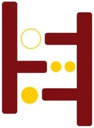

UPScale Innovation Hub
UP Diliman (College of Engineering), with DOST-PCIEERD · NCR
UPScale Innovation Hub is the Technology Business Incubator (TBI) of the University of the Philippines Diliman, housed within the College of Engineering and backed by DOST-PCIEERD. As one of the Philippines' most prestigious university-based TBIs, UPScale supports high-potential engineering-driven startups and student innovators from one of the country's top engineering faculties, with access to UP Diliman's research facilities, faculty experts, and alumni network.
- Category
- Technology Business Incubator
- Host institution
- UP Diliman (College of Engineering), with DOST-PCIEERD
- City
- Quezon City
- Region
- NCR
- Operating status
- Operating
About the Center
Established with support from DOST and positioned within NCR's thriving innovation ecosystem, UPScale provides a structured incubation environment that combines technical mentorship, business development guidance, and access to industry and investor networks. Its location on the UP Diliman campus in Quezon City places it at the center of the Philippines' premier academic and startup community.
The hub delivers its work through three named programs — UP Enterprise, IGNITE, and EntreLead. UP Enterprise is the accelerator for early-stage startups, IGNITE the market-driven product-development programme run with industry partners, and EntreLead the scale-up programme for startups with traction.
🔗 Merged records. Two rows that were previously catalogued separately have been absorbed here, because both are programs of this hub rather than separate centres:
UPSCALE IGNITE — Incubation Arm. Same address, same Facebook page (upscaleinnovationhub), same email (upscale.upd@up.edu.ph). IGNITE originally sat in Grants & Opportunities and was moved to Innovation Centers on the basis that it is incubation, not a grant or competition; it therefore carries no cash award.
UP Enterprise (Pre-revenue Startups). Its own record described it as "operating under UPScale Innovation Hub" — so it was a program page, not a centre. It does maintain a separate Facebook presence at UPenterpriseph, and its record carried a named contact, luis.sison@up.edu.ph, rather than the hub's general address. Both are preserved below.
Programs & Services
- IGNITE (incubation arm) — Industry-Government Network for Innovation and Technology Entrepreneurship. UPScale describes it as "a market-driven product development program based on customer discovery principles" — structured around customer discovery rather than pitch-and-prize mechanics.
- IGNITE — grant application assistance — the hub's stated role is to help teams write proposals and apply for grants, rather than to award a fixed cash prize. The financial benefit is therefore indirect. No open call is published.
- UP Enterprise (pre-revenue startups) — a technology accelerator and incubation program for pre-revenue ventures, supporting innovators in commercializing research-based technologies with high impact potential. Covers pre-revenue startup incubation from ideation to market entry, technology commercialization of university research and IP, mentoring from UP faculty and alumni entrepreneurs, business model validation and legal structuring, investor linkage to angels and VC funds, and Demo Days. Keeps its own page at facebook.com/UPenterpriseph; named contact on file: luis.sison@up.edu.ph.
- EntreLead — the hub's entrepreneurial leadership program.
- Startup Incubation — full-cycle incubation for engineering and tech-driven startups, from idea validation through market launch.
- Technology Mentorship — access to UP Diliman faculty and industry mentors with deep expertise in engineering, ICT, and applied sciences.
- Co-working & Lab Space — dedicated workspace and access to engineering facilities for resident startup teams.
- Business Development Support — coaching on business model development, financial planning, market research, and growth strategy.
- IP & Legal Guidance — support for patent filing, technology licensing, and commercialization of UP-developed research outputs.
- DOST Funding Linkage — connections to DOST-PCIEERD grants, startup competitions, and technology commercialization programs.
- Investor & Industry Network — access to angel investors, venture capital networks, and corporate partnership opportunities through UP's alumni and industry connections.
- Demo Day & Pitch Events — periodic showcase events for resident startups to present to investors, mentors, and potential partners.
- How to engage — academe collaboration appears to be expected; standalone outsider eligibility is not specified. Contact UPScale directly at upscale.upd.edu.ph or upscale.upd@up.edu.ph.
Sources: UPSCALE Innovation Hub · UPSCALE — About · UPSCALE Innovation Hub on Facebook
Contact
Sources & references
- pcieerd.dost.gov.ph/news/latest-news/302-innovation-hub-opens-in-up-diliman
- upscale.upd.edu.ph
- stellarph.io/ecosystem/upscale-innovation-hub
Details are drawn from public records and the sources above, July 2026.
Startupreneur Innovation Hub · synced from the Notion catalog (July 2026) · status: published.